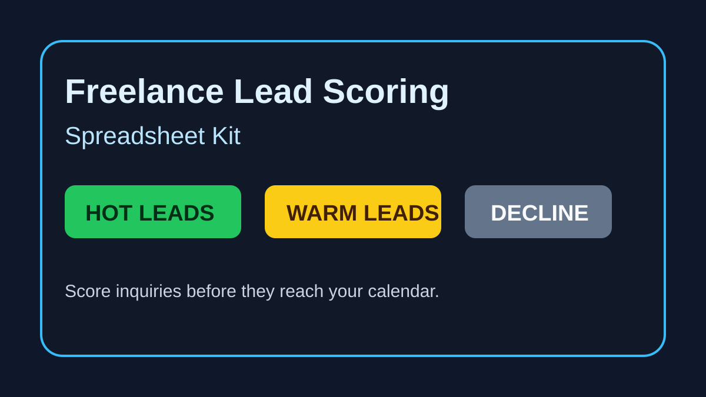

For freelancers who hate wasting calls
Score every client inquiry before it reaches your calendar.
A simple spreadsheet kit that turns vague leads into HOT / WARM / COLD decisions using budget, timeline, decision-maker, scope clarity, urgency, and red-flag scoring.
Buy on Gumroad (€9)Stripe checkout (€9)Try the free CSV€9
Instant download. Google Sheets / Excel compatible.

What you get
Lead scoring CSV
Importable template with example leads.
Importable template with example leads.
Google Sheets formulas
Copy/paste score, tier, and next action formulas.
Copy/paste score, tier, and next action formulas.
Reply scripts
HOT, WARM, and COLD responses.
HOT, WARM, and COLD responses.
Scoring rules
Budget, timeline, authority, scope, urgency, fit, red flags.
Budget, timeline, authority, scope, urgency, fit, red flags.
Intake questions
Questions to add to Tally, Google Forms, or Typeform.
Questions to add to Tally, Google Forms, or Typeform.
30-minute setup guide
Get it working before your next inquiry.
Get it working before your next inquiry.
Why this exists
Most freelancers do not have a lead problem first. They have a qualification problem. Bad-fit leads look like opportunities until they steal unpaid discovery time, produce vague proposals, and expand scope. This kit gives you a simple gate before your calendar.
Get it on GumroadUse it if...
- You keep taking calls with people who cannot afford you.
- You only discover decision-maker problems after the call.
- Your proposals die because the scope was vague from the start.
- You want a lightweight system before building a full CRM or automation stack.